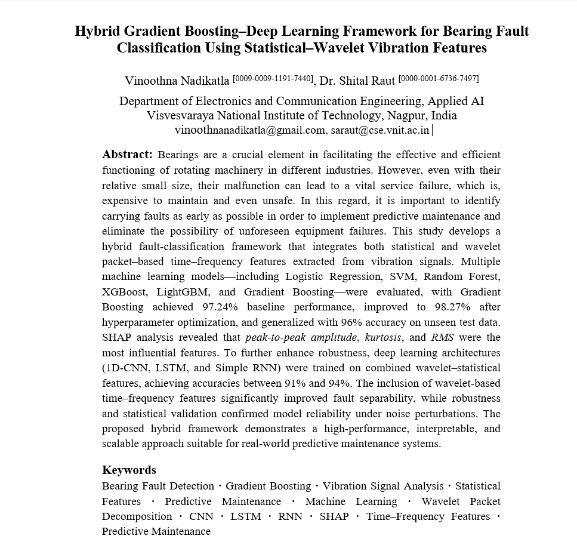

Passionate about transforming data into intelligent solutions through Machine Learning, Generative AI and Data Analytics — building systems that solve real-world challenges and create meaningful impact.
My journey began in Mechanical Engineering, where I learned how machines behave. Today, as an AI Engineer, I build intelligent systems that transform signals, images and data into intelligent action.
From Explainable AI and Computer Vision to Agentic Systems, my focus is on creating practical, production-ready solutions that observe, reason, predict and act in the real world.
Five subsystems — the same arc the engine runs. Hover any capability to see the work behind it.
Before a system can reason, it must perceive. Vision, speech and language fuse into a single stream of awareness — multimodal agents that watch, listen and act in real time.
An agentic assistant that fuses LLM reasoning, speech (STT/TTS) and computer vision. Multi-step workflows orchestrated with LangGraph turn perception into contextual, real-time action.
A multimodal industrial safety monitor: real-time PPE detection, multilingual voice interaction and MJPEG streaming — running on commodity hardware. Perception that protects.
An accelerometer captures the bearing's vibration — a noisy, non-stationary time series that hides the earliest traces of mechanical fault.
The signal is unfolded across time–frequency sub-bands, isolating the transient fault energy that plain statistics would miss.
Hybrid features condense the waveform into the discriminative few. Three carry the most signal —
Six learners benchmarked — Logistic Regression, SVM, Random Forest, XGBoost, LightGBM and Gradient Boosting. One is both the most accurate and light enough for real-time diagnosis.
SHAP attributes every prediction back to its drivers — peak-to-peak amplitude, kurtosis and RMS — turning accuracy into something an engineer can trust.
The model achieved 97.24% baseline performance, improved to 98.27% after hyperparameter optimization, and generalized with 96% accuracy on unseen test data.

Eight projects across perception, reasoning, prediction, security and scale — each a real problem solved end to end.
A knowledge architecture, not a résumé list. Open a branch to expand.